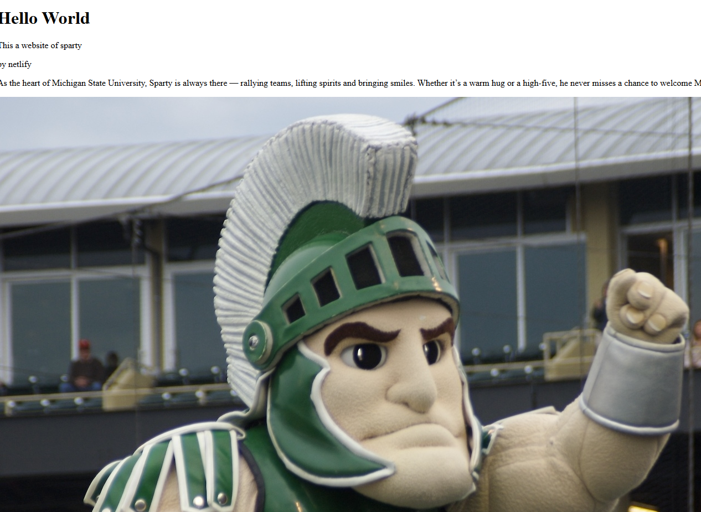

Website 1
Intro to HTML, first website

I am a senior at Michigan State University from the state of michigan. I orignally started in Data Science at MSU but chnaged in Information Science at the start of my junior year. I am interested in building this portoflio and seeing what skills i can learn from this class I think the process so far has been interesting, haven't ever worked this close with html and the process of how it works and deploys elements has been interesting to me so far. I think the project on the first website was valuable because I was able to learn about the basics of HTML in website creation while the feedback on my work showed me what I haven't quite learned yet
My greatest interest in this class just like any is if i can see myself doing this as a career because I still do not quite know what i want to do in life quite yet
I like playing Video Games
I have two cats
I live 20 minutes outside of Detroit
Intro to HTML, first website

Beginning of Semester Long Project
Email:olsonbe3@msu.edu